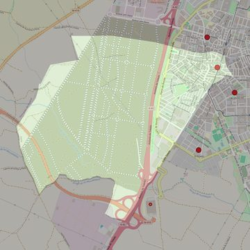

Nuestra Señora de la Asunción
- Arciprestazgo
- Parla
- Población
- Parla
- Dirección postal
- Pza. de la Iglesia, 1
- Código postal
- 28980
- Extensión
- 5,46 km² (546 ha)
- Teléfono
- 912 796 164
- Correo electrónico
- parroquiaasuncionparla@gmail.com
- Información demográfica
- De la parroquia · De la población (Parla) · Del arciprestazgo (Parla)


Descargar mapaLímites según decreto
" Partiendo del punto de intersección de la calle Real con la calle de la Paloma, siguen por el eje de la calle de la Paloma (en dirección noroeste), por una línea recta imaginaria hasta el límite de los términos municipales de Parla-Humanes de Madrid (en dirección oeste), por los límites de los términos municipales de Parla-Humanes de Madrid (en dirección suroeste), por los límites de los términos municipales de Parla-Griñón (en dirección sureste), por los límites de los términos municipales de Parla-Torrejón de la Calzada (en dirección sureste), por el eje de la autovía A-42 (en dirección noreste), por el eje de la entrada Sur de Parla (en dirección noreste), por el eje de la calle Toledo (en dirección noreste), por el eje de la calle Real (en dirección noreste) y por el eje de la calle San Antón (a través de la plaza A. Marsillach; en dirección noreste) hasta el encuentro con la calle La Paloma, punto de partida. (14-11-2006)